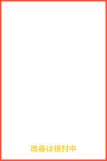
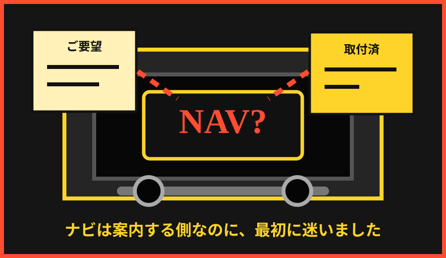

説明より先に空気が重くなる
お客様より先に現場が異変を察知します。危機管理能力だけは実践育ちです。
緊急広報
会社紹介
当店は、少数精鋭という名の人手不足で運営される地域密着型ボディーショップです。お客様の信頼、整備士の根性、そして謎の会議により支えられています。
鈑金塗装から見積、電話対応、来客、急な追加作業まで、現場が柔軟に吸収します。吸収しすぎた結果については、次回会議で慎重に持ち越されます。

やばい会社アピール
当店の強みは、問題が起きる前からなんとなく嫌な予感がしていることです。予感は的中しますが、対策は会議室で眠ります。
社内スローガン：問題は共有します。解決は各自で。
ド派手な会社アピール
お客様より先に現場が異変を察知します。危機管理能力だけは実践育ちです。
ご要望と違った場合でも、まずは報告書の見出しが仕上がります。
決められないものを一時保管する、精神的な倉庫として機能しています。
波が来るたびに強くなります。そろそろ堤防にも休憩が必要です。
当店の特徴
見やすく貼ってあります。守られるかは別の部署、つまり未来の自分です。
発言は活発です。結論だけが慎重に姿を隠します。
緊急時ほどつながらない安心設計。現場判断力が自然に育ちます。
なんとかなる、ではなく、なんとかしている。ここが重要です。
マニュアルは未整備ですが、表情から仕様変更を察する文化があります。
便利さは認めません。便利になった資料だけは採用します。
数字の責任は現場へ。レシートの冒険は各自の裁量で。
就業規則上はあります。来客と電話が、現実側から反論します。
お客様へのお約束
現場スタッフの一日
経営診断メーター
サービスメニュー
社内危険物リスト
机の端で静かに熟成し、ある日突然すべての予定を破壊します。
録音されていないため、記憶力と雰囲気で運用されます。
翻訳すると、担当・期限・予算が未設定の大型案件です。
改善する気持ちを確認し、改善そのものは次回に譲ります。
架空インシデント報告書
お客様の希望ナビは目的地に届いていました。届いていなかったのは、こちらの確認フローでした。新車の輝きと沈黙する伝票の間で、ナビだけが別ルートを案内しました。

会議室セクション
社員の声
判断力が鍛えられました。なぜなら誰も判断してくれないからです。
整備スタッフ A
AIで資料を作ったら便利でした。でも会社は課金しません。
事務スタッフ B
昼休みはあります。概念として。
現場スタッフ C